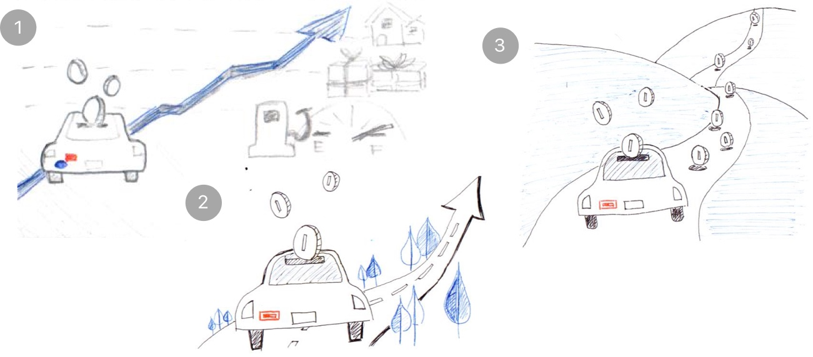

Illustrating Bumpercoin
Bringing to life a new, fun product with real business value • 2018

Bumpercoin is a startup that connects drivers with unused bumper space to local businesses and charities looking to spread the word. I created a series of illustrations to help Bumpercoin communicate its benefits to potential drivers and advertisers in a way that felt fun while clearly articulating the product's business value.
Role
Illustration
Brand identity
The Challenge
Bumpercoin had been explaining its value proposition to drivers and businesses/charities through a mix of text and stock imagery on its website. The company's founder wanted to replace the stock photos with something that better reflected Bumpercoin's product and brand. After learning more about Bumpercoin's goals for this refresh, I set out to create a series of illustrations that could help persuade drivers and businesses evaluating Bumpercoin.
Approach
I began the project by understanding the identity that Bumpercoin wanted to cultivate - how would the company want to be described? The answers to my questions led me to conclude that I would need to develop an illustration style that balanced how Bumpercoin wanted drivers to see them - fun, easy, and clever - with the image it wanted to present to businesses - innovative, good value, and reputable.
With these brand principles in mind, I shifted to brainstorming around how I could best illustrate Bumpercoin's value proposition. Thinking through how to illustrate concepts like ease, passive income, and customization in a way that was unique to Bumpercoin was a fun challenge. By beginning with pen and paper, I was able to rapidly iterate with the Bumpercoin team. I explored multiple ideas and metaphors in search of what resonated most.
Three directions I explored around the concept of Bumpercoin as a source of 'passive income' for drivers
Once we landed on a series of concepts we were excited about, I moved onto defining the visual language of these illustrations, including color choices, level of detail, and level of abstraction vs. realism. Through ongoing feedback, we were able to converge on a palette and aesthetic that the team felt was expressive of Bumpercoin. From there, I finessed the illustrations to get them ready for publication.
'Choose your own decals' - emphasizing to drivers the range of selection and opportunity for self-expression
An illustration to convey to businesses the different ways they could customize their decal advertisements
'Powerful messaging' - showing Bumpercoin's potential as a source of eyeballs for businesses